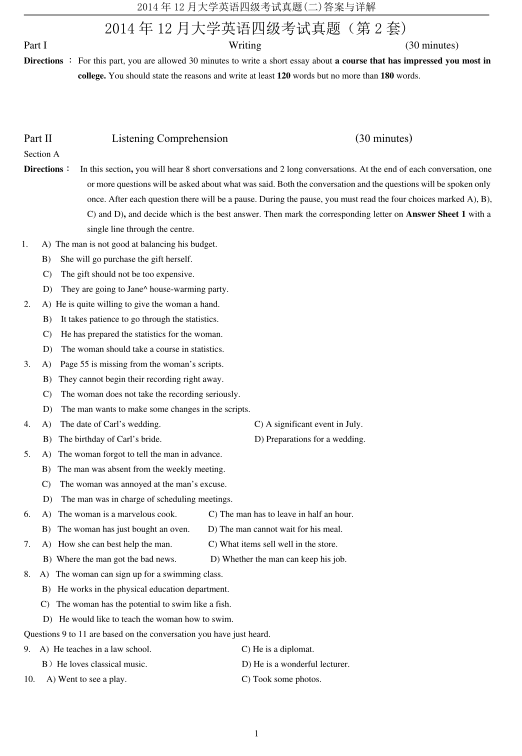
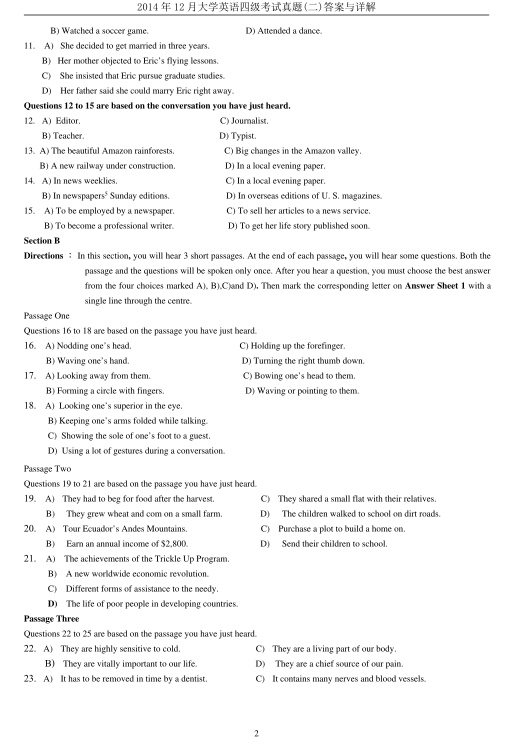
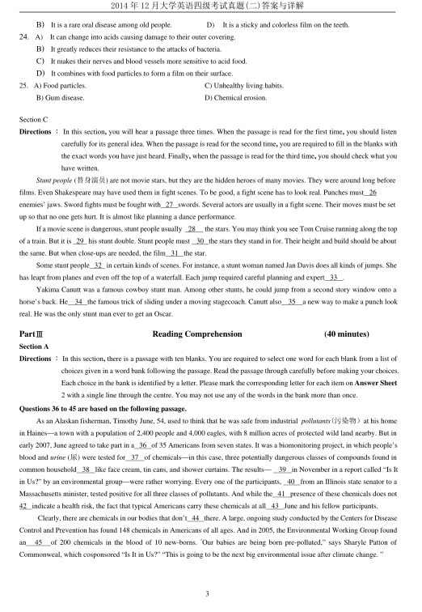
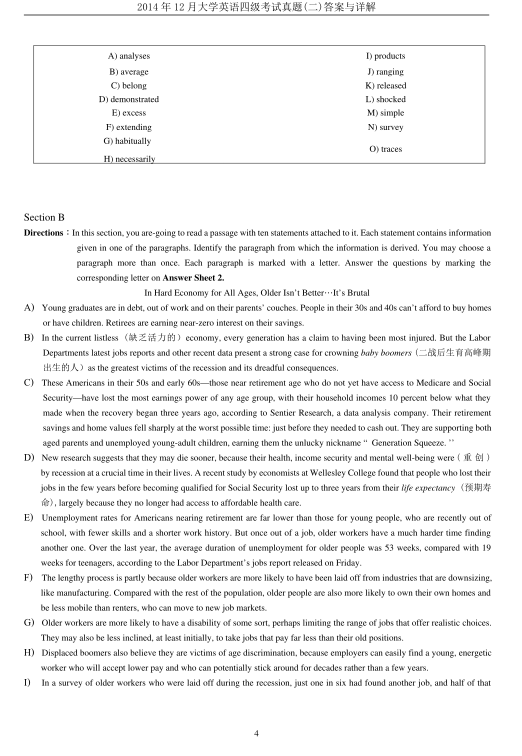
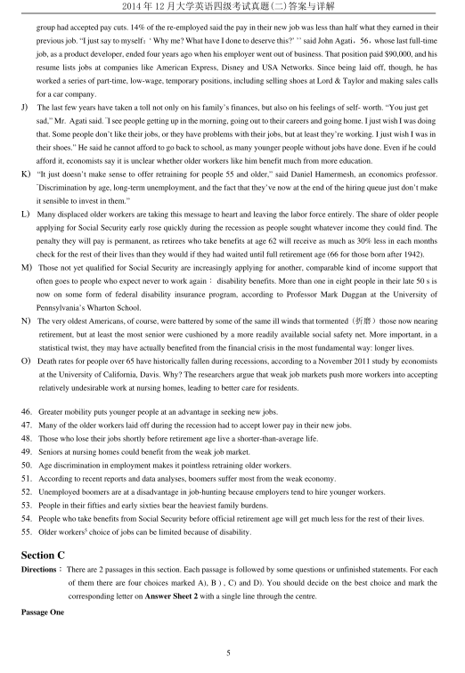
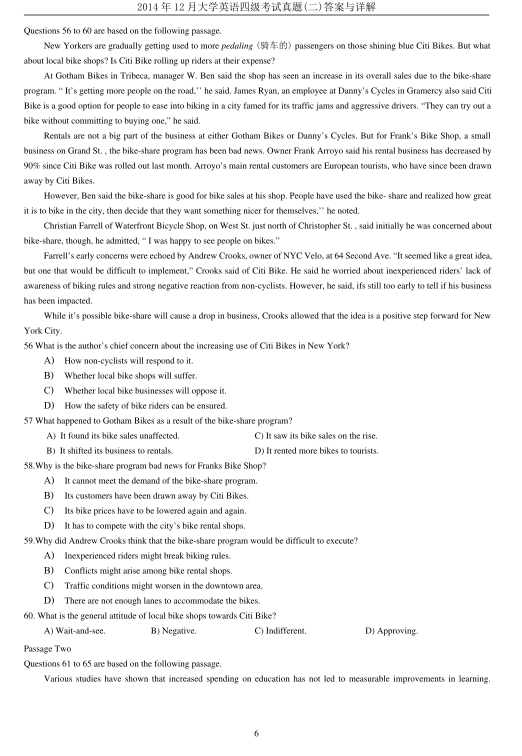
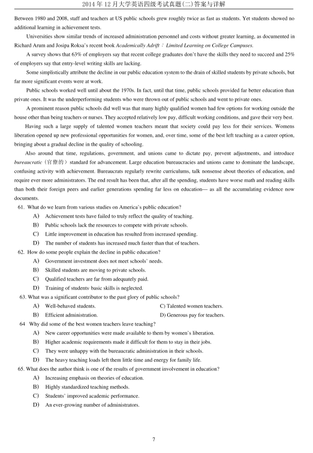

第 1 / 8 页

2014 年12 月大学英语四级考试真题(二)答案与详解
1
2014 年12 月大学英语四级考试真题（第2 套)
Part I
Writing
(30 minutes)
Directions ：For this part, you are allowed 30 minutes to write a short essay about a course that has impressed you most in
college. You should state the reasons and write at least 120 words but no more than 180 words.
Part II
Listening Comprehension
(30 minutes)
Section A
Directions：
In this section, you will hear 8 short conversations and 2 long conversations. At the end of each conversation, one
or more questions will be asked about what was said. Both the conversation and the questions will be spoken only
once. After each question there will be a pause. During the pause, you must read the four choices marked A), B),
C) and D), and decide which is the best answer. Then mark the corresponding letter on Answer Sheet 1 with a
single line through the centre.
1.
A) The man is not good at balancing his budget.
B)
She will go purchase the gift herself.
C)
The gift should not be too expensive.
D)
They are going to Jane^ house-warming party.
2.
A) He is quite willing to give the woman a hand.
B)
It takes patience to go through the statistics.
C)
He has prepared the statistics for the woman.
D)
The woman should take a course in statistics.
3.
A)
Page 55 is missing from the woman’s scripts.
B) They cannot begin their recording right away.
C)
The woman does not take the recording seriously.
D)
The man wants to make some changes in the scripts.
4.
A)
The date of Carl’s wedding.
C) A significant event in July.
B) The birthday of Carl’s bride.
D) Preparations for a wedding.
5.
A) The woman forgot to tell the man in advance.
B) The man was absent from the weekly meeting.
C)
The woman was annoyed at the man’s excuse.
D)
The man was in charge of scheduling meetings.
6.
A) The woman is a marvelous cook.
C) The man has to leave in half an hour.
B) The woman has just bought an oven.
D) The man cannot wait for his meal.
7.
A) How she can best help the man.
C) What items sell well in the store.
B) Where the man got the bad news.
D) Whether the man can keep his job.
8.
A) The woman can sign up for a swimming class.
B) He works in the physical education department.
C) The woman has the potential to swim like a fish.
D) He would like to teach the woman how to swim.
Questions 9 to 11 are based on the conversation you have just heard.
9.
A) He teaches in a law school.
C) He is a diplomat.
B）He loves classical music.
D) He is a wonderful lecturer.
10.
A) Went to see a play.
C) Took some photos.
查看 / 复制本页文字
2014 年12 月大学英语四级考试真题(二)答案与详解 1 2014 年12 月大学英语四级考试真题（第2 套) Part I Writing (30 minutes) Directions ：For this part, you are allowed 30 minutes to write a short essay about a course that has impressed you most in college. You should state the reasons and write at least 120 words but no more than 180 words. Part II Listening Comprehension (30 minutes) Section A Directions： In this section, you will hear 8 short conversations and 2 long conversations. At the end of each conversation, one or more questions will be asked about what was said. Both the conversation and the questions will be spoken only once. After each question there will be a pause. During the pause, you must read the four choices marked A), B), C) and D), and decide which is the best answer. Then mark the corresponding letter on Answer Sheet 1 with a single line through the centre. 1. A) The man is not good at balancing his budget. B) She will go purchase the gift herself. C) The gift should not be too expensive. D) They are going to Jane^ house-warming party. 2. A) He is quite willing to give the woman a hand. B) It takes patience to go through the statistics. C) He has prepared the statistics for the woman. D) The woman should take a course in statistics. 3. A) Page 55 is missing from the woman’s scripts. B) They cannot begin their recording right away. C) The woman does not take the recording seriously. D) The man wants to make some changes in the scripts. 4. A) The date of Carl’s wedding. C) A significant event in July. B) The birthday of Carl’s bride. D) Preparations for a wedding. 5. A) The woman forgot to tell the man in advance. B) The man was absent from the weekly meeting. C) The woman was annoyed at the man’s excuse. D) The man was in charge of scheduling meetings. 6. A) The woman is a marvelous cook. C) The man has to leave in half an hour. B) The woman has just bought an oven. D) The man cannot wait for his meal. 7. A) How she can best help the man. C) What items sell well in the store. B) Where the man got the bad news. D) Whether the man can keep his job. 8. A) The woman can sign up for a swimming class. B) He works in the physical education department. C) The woman has the potential to swim like a fish. D) He would like to teach the woman how to swim. Questions 9 to 11 are based on the conversation you have just heard. 9. A) He teaches in a law school. C) He is a diplomat. B）He loves classical music. D) He is a wonderful lecturer. 10. A) Went to see a play. C) Took some photos.
第 2 / 8 页

2014 年12 月大学英语四级考试真题(二)答案与详解
2
B) Watched a soccer game.
D) Attended a dance.
11.
A) She decided to get married in three years.
B) Her mother objected to Eric’s flying lessons.
C)
She insisted that Eric pursue graduate studies.
D)
Her father said she could marry Eric right away.
Questions 12 to 15 are based on the conversation you have just heard.
12. A) Editor.
C) Journalist.
B) Teacher.
D) Typist.
13. A) The beautiful Amazon rainforests.
C) Big changes in the Amazon valley.
B) A new railway under construction.
D) In a local evening paper.
14. A) In news weeklies.
C) In a local evening paper.
B) In newspapers5 Sunday editions.
D) In overseas editions of U. S. magazines.
15.
A) To be employed by a newspaper.
C) To sell her articles to a news service.
B) To become a professional writer.
D) To get her life story published soon.
Section B
Directions ：In this section, you will hear 3 short passages. At the end of each passage, you will hear some questions. Both the
passage and the questions will be spoken only once. After you hear a question, you must choose the best answer
from the four choices marked A), B),C)and D). Then mark the corresponding letter on Answer Sheet 1 with a
single line through the centre.
Passage One
Questions 16 to 18 are based on the passage you have just heard.
16.
A) Nodding one’s head.
C) Holding up the forefinger.
B) Waving one’s hand.
D) Turning the right thumb down.
17.
A) Looking away from them.
C) Bowing one’s head to them.
B) Forming a circle with fingers.
D) Waving or pointing to them.
18.
A) Looking one’s superior in the eye.
B) Keeping one’s arms folded while talking.
C) Showing the sole of one’s foot to a guest.
D) Using a lot of gestures during a conversation.
Passage Two
Questions 19 to 21 are based on the passage you have just heard.
19.
A)
They had to beg for food after the harvest.
C)
They shared a small flat with their relatives.
B)
They grew wheat and com on a small farm.
D)
The children walked to school on dirt roads.
20.
A)
Tour Ecuador’s Andes Mountains.
C)
Purchase a plot to build a home on.
B)
Earn an annual income of $2,800.
D)
Send their children to school.
21.
A)
The achievements of the Trickle Up Program.
B)
A new worldwide economic revolution.
C)
Different forms of assistance to the needy.
D)
The life of poor people in developing countries.
Passage Three
Questions 22 to 25 are based on the passage you have just heard.
22. A)
They are highly sensitive to cold.
C)
They are a living part of our body.
B)
They are vitally important to our life.
D)
They are a chief source of our pain.
23. A)
It has to be removed in time by a dentist.
C)
It contains many nerves and blood vessels.
查看 / 复制本页文字
2014 年12 月大学英语四级考试真题(二)答案与详解 2 B) Watched a soccer game. D) Attended a dance. 11. A) She decided to get married in three years. B) Her mother objected to Eric’s flying lessons. C) She insisted that Eric pursue graduate studies. D) Her father said she could marry Eric right away. Questions 12 to 15 are based on the conversation you have just heard. 12. A) Editor. C) Journalist. B) Teacher. D) Typist. 13. A) The beautiful Amazon rainforests. C) Big changes in the Amazon valley. B) A new railway under construction. D) In a local evening paper. 14. A) In news weeklies. C) In a local evening paper. B) In newspapers5 Sunday editions. D) In overseas editions of U. S. magazines. 15. A) To be employed by a newspaper. C) To sell her articles to a news service. B) To become a professional writer. D) To get her life story published soon. Section B Directions ：In this section, you will hear 3 short passages. At the end of each passage, you will hear some questions. Both the passage and the questions will be spoken only once. After you hear a question, you must choose the best answer from the four choices marked A), B),C)and D). Then mark the corresponding letter on Answer Sheet 1 with a single line through the centre. Passage One Questions 16 to 18 are based on the passage you have just heard. 16. A) Nodding one’s head. C) Holding up the forefinger. B) Waving one’s hand. D) Turning the right thumb down. 17. A) Looking away from them. C) Bowing one’s head to them. B) Forming a circle with fingers. D) Waving or pointing to them. 18. A) Looking one’s superior in the eye. B) Keeping one’s arms folded while talking. C) Showing the sole of one’s foot to a guest. D) Using a lot of gestures during a conversation. Passage Two Questions 19 to 21 are based on the passage you have just heard. 19. A) They had to beg for food after the harvest. C) They shared a small flat with their relatives. B) They grew wheat and com on a small farm. D) The children walked to school on dirt roads. 20. A) Tour Ecuador’s Andes Mountains. C) Purchase a plot to build a home on. B) Earn an annual income of $2,800. D) Send their children to school. 21. A) The achievements of the Trickle Up Program. B) A new worldwide economic revolution. C) Different forms of assistance to the needy. D) The life of poor people in developing countries. Passage Three Questions 22 to 25 are based on the passage you have just heard. 22. A) They are highly sensitive to cold. C) They are a living part of our body. B) They are vitally important to our life. D) They are a chief source of our pain. 23. A) It has to be removed in time by a dentist. C) It contains many nerves and blood vessels.
第 3 / 8 页

2014 年12 月大学英语四级考试真题(二)答案与详解
3
B)
It is a rare oral disease among old people.
D)
It is a sticky and colorless film on the teeth.
24.
A)
It can change into acids causing damage to their outer covering.
B)
It greatly reduces their resistance to the attacks of bacteria.
C)
It makes their nerves and blood vessels more sensitive to acid food.
D)
It combines with food particles to form a film on their surface.
25. A) Food particles.
C) Unhealthy living habits.
B) Gum disease.
D) Chemical erosion.
Section C
Directions ：In this section, you will hear a passage three times. When the passage is read for the first time, you should listen
carefully for its general idea. When the passage is read for the second time, you are required to fill in the blanks with
the exact words you have just heard. Finally, when the passage is read for the third time, you should check what you
have written.
Stunt people (替身演员) are not movie stars, but they are the hidden heroes of many movies. They were around long before
films. Even Shakespeare may have used them in fight scenes. To be good, a fight scene has to look real. Punches must 26
enemies’ jaws. Sword fights must be fought with 27 swords. Several actors are usually in a fight scene. Their moves must be set
up so that no one gets hurt. It is almost like planning a dance performance.
If a movie scene is dangerous, stunt people usually
28
the stars. You may think you see Tom Cruise running along the top
of a train. But it is 29 his stunt double. Stunt people must
30 the stars they stand in for. Their height and build should be about
the same. But when close-ups are needed, the film 31 the star.
Some stunt people 32 in certain kinds of scenes. For instance, a stunt woman named Jan Davis does all kinds of jumps. She
has leapt from planes and even off the top of a waterfall. Each jump required careful planning and expert 33 .
Yakima Canutt was a famous cowboy stunt man. Among other stunts, he could jump from a second story window onto a
horse’s back. He
34 the famous trick of sliding under a moving stagecoach. Canutt also
35
a new way to make a punch look
real. He was the only stunt man ever to get an Oscar.
PartⅢ
Reading Comprehension
(40 minutes)
Section A
Directions ：In this section, there is a passage with ten blanks. You are required to select one word for each blank from a list of
choices given in a word bank following the passage. Read the passage through carefully before making your choices.
Each choice in the bank is identified by a letter. Please mark the corresponding letter for each item on Answer Sheet
2 with a single line through the centre. You may not use any of the words in the bank more than once.
Questions 36 to 45 are based on the following passage.
As an Alaskan fisherman, Timothy June, 54, used to think that he was safe from industrial pollutants(污染物）at his home
in Haines—a town with a population of 2,400 people and 4,000 eagles, with 8 million acres of protected wild land nearby. But in
early 2007, June agreed to take part in a 36 of 35 Americans from seven states. It was a biomonitoring project, in which people’s
blood and urine (尿) were tested for
37
of chemicals—in this case, three potentially dangerous classes of compounds found in
common household 38 like face cream, tin cans, and shower curtains. The results—
39 in November in a report called “Is It
in Us?” by an environmental group—were rather worrying. Every one of the participants,
40
from an Illinois state senator to a
Massachusetts minister, tested positive for all three classes of pollutants. And while the 41 presence of these chemicals does not
42 indicate a health risk, the fact that typical Americans carry these chemicals at all 43 June and his fellow participants.
Clearly, there are chemicals in our bodies that don’t 44 there. A large, ongoing study conducted by the Centers for Disease
Control and Prevention has found 148 chemicals in Americans of all ages. And in 2005, the Environmental Working Group found
an
45
of 200 chemicals in the blood of 10 new-borns. “Our babies are being born pre-polluted,” says Sharyle Patton of
Commonweal, which cosponsored “Is It in Us?” “This is going to be the next big environmental issue after climate change. ”
查看 / 复制本页文字
2014 年12 月大学英语四级考试真题(二)答案与详解 3 B) It is a rare oral disease among old people. D) It is a sticky and colorless film on the teeth. 24. A) It can change into acids causing damage to their outer covering. B) It greatly reduces their resistance to the attacks of bacteria. C) It makes their nerves and blood vessels more sensitive to acid food. D) It combines with food particles to form a film on their surface. 25. A) Food particles. C) Unhealthy living habits. B) Gum disease. D) Chemical erosion. Section C Directions ：In this section, you will hear a passage three times. When the passage is read for the first time, you should listen carefully for its general idea. When the passage is read for the second time, you are required to fill in the blanks with the exact words you have just heard. Finally, when the passage is read for the third time, you should check what you have written. Stunt people (替身演员) are not movie stars, but they are the hidden heroes of many movies. They were around long before films. Even Shakespeare may have used them in fight scenes. To be good, a fight scene has to look real. Punches must 26 enemies’ jaws. Sword fights must be fought with 27 swords. Several actors are usually in a fight scene. Their moves must be set up so that no one gets hurt. It is almost like planning a dance performance. If a movie scene is dangerous, stunt people usually 28 the stars. You may think you see Tom Cruise running along the top of a train. But it is 29 his stunt double. Stunt people must 30 the stars they stand in for. Their height and build should be about the same. But when close-ups are needed, the film 31 the star. Some stunt people 32 in certain kinds of scenes. For instance, a stunt woman named Jan Davis does all kinds of jumps. She has leapt from planes and even off the top of a waterfall. Each jump required careful planning and expert 33 . Yakima Canutt was a famous cowboy stunt man. Among other stunts, he could jump from a second story window onto a horse’s back. He 34 the famous trick of sliding under a moving stagecoach. Canutt also 35 a new way to make a punch look real. He was the only stunt man ever to get an Oscar. PartⅢ Reading Comprehension (40 minutes) Section A Directions ：In this section, there is a passage with ten blanks. You are required to select one word for each blank from a list of choices given in a word bank following the passage. Read the passage through carefully before making your choices. Each choice in the bank is identified by a letter. Please mark the corresponding letter for each item on Answer Sheet 2 with a single line through the centre. You may not use any of the words in the bank more than once. Questions 36 to 45 are based on the following passage. As an Alaskan fisherman, Timothy June, 54, used to think that he was safe from industrial pollutants(污染物）at his home in Haines—a town with a population of 2,400 people and 4,000 eagles, with 8 million acres of protected wild land nearby. But in early 2007, June agreed to take part in a 36 of 35 Americans from seven states. It was a biomonitoring project, in which people’s blood and urine (尿) were tested for 37 of chemicals—in this case, three potentially dangerous classes of compounds found in common household 38 like face cream, tin cans, and shower curtains. The results— 39 in November in a report called “Is It in Us?” by an environmental group—were rather worrying. Every one of the participants, 40 from an Illinois state senator to a Massachusetts minister, tested positive for all three classes of pollutants. And while the 41 presence of these chemicals does not 42 indicate a health risk, the fact that typical Americans carry these chemicals at all 43 June and his fellow participants. Clearly, there are chemicals in our bodies that don’t 44 there. A large, ongoing study conducted by the Centers for Disease Control and Prevention has found 148 chemicals in Americans of all ages. And in 2005, the Environmental Working Group found an 45 of 200 chemicals in the blood of 10 new-borns. “Our babies are being born pre-polluted,” says Sharyle Patton of Commonweal, which cosponsored “Is It in Us?” “This is going to be the next big environmental issue after climate change. ”
第 4 / 8 页

2014 年12 月大学英语四级考试真题(二)答案与详解
4
Section B
Directions：In this section, you are-going to read a passage with ten statements attached to it. Each statement contains information
given in one of the paragraphs. Identify the paragraph from which the information is derived. You may choose a
paragraph more than once. Each paragraph is marked with a letter. Answer the questions by marking the
corresponding letter on Answer Sheet 2.
In Hard Economy for All Ages, Older Isn’t Better…It’s Brutal
A)
Young graduates are in debt, out of work and on their parents’ couches. People in their 30s and 40s can’t afford to buy homes
or have children. Retirees are earning near-zero interest on their savings.
B)
In the current listless (缺乏活力的）economy, every generation has a claim to having been most injured. But the Labor
Departments latest jobs reports and other recent data present a strong case for crowning baby boomers (二战后生育高峰期
出生的人）as the greatest victims of the recession and its dreadful consequences.
C)
These Americans in their 50s and early 60s—those near retirement age who do not yet have access to Medicare and Social
Security—have lost the most earnings power of any age group, with their household incomes 10 percent below what they
made when the recovery began three years ago, according to Sentier Research, a data analysis company. Their retirement
savings and home values fell sharply at the worst possible time: just before they needed to cash out. They are supporting both
aged parents and unemployed young-adult children, earning them the unlucky nickname “ Generation Squeeze. ’’
D)
New research suggests that they may die sooner, because their health, income security and mental well-being were ( 重创)
by recession at a crucial time in their lives. A recent study by economists at Wellesley College found that people who lost their
jobs in the few years before becoming qualified for Social Security lost up to three years from their life expectancy (预期寿
命),largely because they no longer had access to affordable health care.
E)
Unemployment rates for Americans nearing retirement are far lower than those for young people, who are recently out of
school, with fewer skills and a shorter work history. But once out of a job, older workers have a much harder time finding
another one. Over the last year, the average duration of unemployment for older people was 53 weeks, compared with 19
weeks for teenagers, according to the Labor Department’s jobs report released on Friday.
F)
The lengthy process is partly because older workers are more likely to have been laid off from industries that are downsizing,
like manufacturing. Compared with the rest of the population, older people are also more likely to own their own homes and
be less mobile than renters, who can move to new job markets.
G)
Older workers are more likely to have a disability of some sort, perhaps limiting the range of jobs that offer realistic choices.
They may also be less inclined, at least initially, to take jobs that pay far less than their old positions.
H)
Displaced boomers also believe they are victims of age discrimination, because employers can easily find a young, energetic
worker who will accept lower pay and who can potentially stick around for decades rather than a few years.
I)
In a survey of older workers who were laid off during the recession, just one in six had found another job, and half of that
A) analyses
I) products
B) average
J) ranging
C) belong
K) released
D) demonstrated
L) shocked
E) excess
M) simple
F) extending
N) survey
G) habitually
H) necessarily
O) traces
查看 / 复制本页文字
2014 年12 月大学英语四级考试真题(二)答案与详解 4 Section B Directions：In this section, you are-going to read a passage with ten statements attached to it. Each statement contains information given in one of the paragraphs. Identify the paragraph from which the information is derived. You may choose a paragraph more than once. Each paragraph is marked with a letter. Answer the questions by marking the corresponding letter on Answer Sheet 2. In Hard Economy for All Ages, Older Isn’t Better…It’s Brutal A) Young graduates are in debt, out of work and on their parents’ couches. People in their 30s and 40s can’t afford to buy homes or have children. Retirees are earning near-zero interest on their savings. B) In the current listless (缺乏活力的）economy, every generation has a claim to having been most injured. But the Labor Departments latest jobs reports and other recent data present a strong case for crowning baby boomers (二战后生育高峰期 出生的人）as the greatest victims of the recession and its dreadful consequences. C) These Americans in their 50s and early 60s—those near retirement age who do not yet have access to Medicare and Social Security—have lost the most earnings power of any age group, with their household incomes 10 percent below what they made when the recovery began three years ago, according to Sentier Research, a data analysis company. Their retirement savings and home values fell sharply at the worst possible time: just before they needed to cash out. They are supporting both aged parents and unemployed young-adult children, earning them the unlucky nickname “ Generation Squeeze. ’’ D) New research suggests that they may die sooner, because their health, income security and mental well-being were ( 重创) by recession at a crucial time in their lives. A recent study by economists at Wellesley College found that people who lost their jobs in the few years before becoming qualified for Social Security lost up to three years from their life expectancy (预期寿 命),largely because they no longer had access to affordable health care. E) Unemployment rates for Americans nearing retirement are far lower than those for young people, who are recently out of school, with fewer skills and a shorter work history. But once out of a job, older workers have a much harder time finding another one. Over the last year, the average duration of unemployment for older people was 53 weeks, compared with 19 weeks for teenagers, according to the Labor Department’s jobs report released on Friday. F) The lengthy process is partly because older workers are more likely to have been laid off from industries that are downsizing, like manufacturing. Compared with the rest of the population, older people are also more likely to own their own homes and be less mobile than renters, who can move to new job markets. G) Older workers are more likely to have a disability of some sort, perhaps limiting the range of jobs that offer realistic choices. They may also be less inclined, at least initially, to take jobs that pay far less than their old positions. H) Displaced boomers also believe they are victims of age discrimination, because employers can easily find a young, energetic worker who will accept lower pay and who can potentially stick around for decades rather than a few years. I) In a survey of older workers who were laid off during the recession, just one in six had found another job, and half of that A) analyses I) products B) average J) ranging C) belong K) released D) demonstrated L) shocked E) excess M) simple F) extending N) survey G) habitually H) necessarily O) traces
第 5 / 8 页

2014 年12 月大学英语四级考试真题(二)答案与详解
5
group had accepted pay cuts. 14% of the re-employed said the pay in their new job was less than half what they earned in their
previous job. “I just say to myself：‘ Why me? What have I done to deserve this?’ ’’ said John Agati，56，whose last full-time
job, as a product developer, ended four years ago when his employer went out of business. That position paid $90,000, and his
resume lists jobs at companies like American Express, Disney and USA Networks. Since being laid off, though, he has
worked a series of part-time, low-wage, temporary positions, including selling shoes at Lord & Taylor and making sales calls
for a car company.
J)
The last few years have taken a toll not only on his family’s finances, but also on his feelings of self- worth. “You just get
sad,” Mr. Agati said. “I see people getting up in the morning, going out to their careers and going home. I just wish I was doing
that. Some people don’t like their jobs, or they have problems with their jobs, but at least they’re working. I just wish I was in
their shoes.” He said he cannot afford to go back to school, as many younger people without jobs have done. Even if he could
afford it, economists say it is unclear whether older workers like him benefit much from more education.
K)
“It just doesn’t make sense to offer retraining for people 55 and older,” said Daniel Hamermesh, an economics professor.
“Discrimination by age, long-term unemployment, and the fact that they’ve now at the end of the hiring queue just don’t make
it sensible to invest in them.”
L)
Many displaced older workers are taking this message to heart and leaving the labor force entirely. The share of older people
applying for Social Security early rose quickly during the recession as people sought whatever income they could find. The
penalty they will pay is permanent, as retirees who take benefits at age 62 will receive as much as 30% less in each months
check for the rest of their lives than they would if they had waited until full retirement age (66 for those born after 1942).
M) Those not yet qualified for Social Security are increasingly applying for another, comparable kind of income support that
often goes to people who expect never to work again：disability benefits. More than one in eight people in their late 50 s is
now on some form of federal disability insurance program, according to Professor Mark Duggan at the University of
Pennsylvania’s Wharton School.
N)
The very oldest Americans, of course, were battered by some of the same ill winds that tormented (折磨）those now nearing
retirement, but at least the most senior were cushioned by a more readily available social safety net. More important, in a
statistical twist, they may have actually benefited from the financial crisis in the most fundamental way: longer lives.
O)
Death rates for people over 65 have historically fallen during recessions, according to a November 2011 study by economists
at the University of California, Davis. Why? The researchers argue that weak job markets push more workers into accepting
relatively undesirable work at nursing homes, leading to better care for residents.
46. Greater mobility puts younger people at an advantage in seeking new jobs.
47. Many of the older workers laid off during the recession had to accept lower pay in their new jobs.
48. Those who lose their jobs shortly before retirement age live a shorter-than-average life.
49. Seniors at nursing homes could benefit from the weak job market.
50. Age discrimination in employment makes it pointless retraining older workers.
51. According to recent reports and data analyses, boomers suffer most from the weak economy.
52. Unemployed boomers are at a disadvantage in job-hunting because employers tend to hire younger workers.
53. People in their fifties and early sixties bear the heaviest family burdens.
54. People who take benefits from Social Security before official retirement age will get much less for the rest of their lives.
55. Older workers5 choice of jobs can be limited because of disability.
Section C
Directions：There are 2 passages in this section. Each passage is followed by some questions or unfinished statements. For each
of them there are four choices marked A), B ) , C) and D). You should decide on the best choice and mark the
corresponding letter on Answer Sheet 2 with a single line through the centre.
Passage One
查看 / 复制本页文字
2014 年12 月大学英语四级考试真题(二)答案与详解 5 group had accepted pay cuts. 14% of the re-employed said the pay in their new job was less than half what they earned in their previous job. “I just say to myself：‘ Why me? What have I done to deserve this?’ ’’ said John Agati，56，whose last full-time job, as a product developer, ended four years ago when his employer went out of business. That position paid $90,000, and his resume lists jobs at companies like American Express, Disney and USA Networks. Since being laid off, though, he has worked a series of part-time, low-wage, temporary positions, including selling shoes at Lord & Taylor and making sales calls for a car company. J) The last few years have taken a toll not only on his family’s finances, but also on his feelings of self- worth. “You just get sad,” Mr. Agati said. “I see people getting up in the morning, going out to their careers and going home. I just wish I was doing that. Some people don’t like their jobs, or they have problems with their jobs, but at least they’re working. I just wish I was in their shoes.” He said he cannot afford to go back to school, as many younger people without jobs have done. Even if he could afford it, economists say it is unclear whether older workers like him benefit much from more education. K) “It just doesn’t make sense to offer retraining for people 55 and older,” said Daniel Hamermesh, an economics professor. “Discrimination by age, long-term unemployment, and the fact that they’ve now at the end of the hiring queue just don’t make it sensible to invest in them.” L) Many displaced older workers are taking this message to heart and leaving the labor force entirely. The share of older people applying for Social Security early rose quickly during the recession as people sought whatever income they could find. The penalty they will pay is permanent, as retirees who take benefits at age 62 will receive as much as 30% less in each months check for the rest of their lives than they would if they had waited until full retirement age (66 for those born after 1942). M) Those not yet qualified for Social Security are increasingly applying for another, comparable kind of income support that often goes to people who expect never to work again：disability benefits. More than one in eight people in their late 50 s is now on some form of federal disability insurance program, according to Professor Mark Duggan at the University of Pennsylvania’s Wharton School. N) The very oldest Americans, of course, were battered by some of the same ill winds that tormented (折磨）those now nearing retirement, but at least the most senior were cushioned by a more readily available social safety net. More important, in a statistical twist, they may have actually benefited from the financial crisis in the most fundamental way: longer lives. O) Death rates for people over 65 have historically fallen during recessions, according to a November 2011 study by economists at the University of California, Davis. Why? The researchers argue that weak job markets push more workers into accepting relatively undesirable work at nursing homes, leading to better care for residents. 46. Greater mobility puts younger people at an advantage in seeking new jobs. 47. Many of the older workers laid off during the recession had to accept lower pay in their new jobs. 48. Those who lose their jobs shortly before retirement age live a shorter-than-average life. 49. Seniors at nursing homes could benefit from the weak job market. 50. Age discrimination in employment makes it pointless retraining older workers. 51. According to recent reports and data analyses, boomers suffer most from the weak economy. 52. Unemployed boomers are at a disadvantage in job-hunting because employers tend to hire younger workers. 53. People in their fifties and early sixties bear the heaviest family burdens. 54. People who take benefits from Social Security before official retirement age will get much less for the rest of their lives. 55. Older workers5 choice of jobs can be limited because of disability. Section C Directions：There are 2 passages in this section. Each passage is followed by some questions or unfinished statements. For each of them there are four choices marked A), B ) , C) and D). You should decide on the best choice and mark the corresponding letter on Answer Sheet 2 with a single line through the centre. Passage One
第 6 / 8 页

2014 年12 月大学英语四级考试真题(二)答案与详解
6
Questions 56 to 60 are based on the following passage.
New Yorkers are gradually getting used to more pedaling (骑车的) passengers on those shining blue Citi Bikes. But what
about local bike shops? Is Citi Bike rolling up riders at their expense?
At Gotham Bikes in Tribeca, manager W. Ben said the shop has seen an increase in its overall sales due to the bike-share
program. “ It’s getting more people on the road,’’ he said. James Ryan, an employee at Danny’s Cycles in Gramercy also said Citi
Bike is a good option for people to ease into biking in a city famed for its traffic jams and aggressive drivers. “They can try out a
bike without committing to buying one,” he said.
Rentals are not a big part of the business at either Gotham Bikes or Danny’s Cycles. But for Frank’s Bike Shop, a small
business on Grand St. , the bike-share program has been bad news. Owner Frank Arroyo said his rental business has decreased by
90% since Citi Bike was rolled out last month. Arroyo’s main rental customers are European tourists, who have since been drawn
away by Citi Bikes.
However, Ben said the bike-share is good for bike sales at his shop. People have used the bike- share and realized how great
it is to bike in the city, then decide that they want something nicer for themselves,’’ he noted.
Christian Farrell of Waterfront Bicycle Shop, on West St. just north of Christopher St. , said initially he was concerned about
bike-share, though, he admitted, “ I was happy to see people on bikes.”
Farrell’s early concerns were echoed by Andrew Crooks, owner of NYC Velo, at 64 Second Ave. “It seemed like a great idea,
but one that would be difficult to implement,” Crooks said of Citi Bike. He said he worried about inexperienced riders’ lack of
awareness of biking rules and strong negative reaction from non-cyclists. However, he said, ifs still too early to tell if his business
has been impacted.
While it’s possible bike-share will cause a drop in business, Crooks allowed that the idea is a positive step forward for New
York City.
56 What is the author’s chief concern about the increasing use of Citi Bikes in New York?
A)
How non-cyclists will respond to it.
B)
Whether local bike shops will suffer.
C)
Whether local bike businesses will oppose it.
D)
How the safety of bike riders can be ensured.
57 What happened to Gotham Bikes as a result of the bike-share program?
A) It found its bike sales unaffected.
C) It saw its bike sales on the rise.
B) It shifted its business to rentals.
D) It rented more bikes to tourists.
58.Why is the bike-share program bad news for Franks Bike Shop?
A)
It cannot meet the demand of the bike-share program.
B)
Its customers have been drawn away by Citi Bikes.
C)
Its bike prices have to be lowered again and again.
D)
It has to compete with the city’s bike rental shops.
59.Why did Andrew Crooks think that the bike-share program would be difficult to execute?
A)
Inexperienced riders might break biking rules.
B)
Conflicts might arise among bike rental shops.
C)
Traffic conditions might worsen in the downtown area.
D)
There are not enough lanes to accommodate the bikes.
60. What is the general attitude of local bike shops towards Citi Bike?
A) Wait-and-see.
B) Negative.
C) Indifferent.
D) Approving.
Passage Two
Questions 61 to 65 are based on the following passage.
Various studies have shown that increased spending on education has not led to measurable improvements in learning.
查看 / 复制本页文字
2014 年12 月大学英语四级考试真题(二)答案与详解 6 Questions 56 to 60 are based on the following passage. New Yorkers are gradually getting used to more pedaling (骑车的) passengers on those shining blue Citi Bikes. But what about local bike shops? Is Citi Bike rolling up riders at their expense? At Gotham Bikes in Tribeca, manager W. Ben said the shop has seen an increase in its overall sales due to the bike-share program. “ It’s getting more people on the road,’’ he said. James Ryan, an employee at Danny’s Cycles in Gramercy also said Citi Bike is a good option for people to ease into biking in a city famed for its traffic jams and aggressive drivers. “They can try out a bike without committing to buying one,” he said. Rentals are not a big part of the business at either Gotham Bikes or Danny’s Cycles. But for Frank’s Bike Shop, a small business on Grand St. , the bike-share program has been bad news. Owner Frank Arroyo said his rental business has decreased by 90% since Citi Bike was rolled out last month. Arroyo’s main rental customers are European tourists, who have since been drawn away by Citi Bikes. However, Ben said the bike-share is good for bike sales at his shop. People have used the bike- share and realized how great it is to bike in the city, then decide that they want something nicer for themselves,’’ he noted. Christian Farrell of Waterfront Bicycle Shop, on West St. just north of Christopher St. , said initially he was concerned about bike-share, though, he admitted, “ I was happy to see people on bikes.” Farrell’s early concerns were echoed by Andrew Crooks, owner of NYC Velo, at 64 Second Ave. “It seemed like a great idea, but one that would be difficult to implement,” Crooks said of Citi Bike. He said he worried about inexperienced riders’ lack of awareness of biking rules and strong negative reaction from non-cyclists. However, he said, ifs still too early to tell if his business has been impacted. While it’s possible bike-share will cause a drop in business, Crooks allowed that the idea is a positive step forward for New York City. 56 What is the author’s chief concern about the increasing use of Citi Bikes in New York? A) How non-cyclists will respond to it. B) Whether local bike shops will suffer. C) Whether local bike businesses will oppose it. D) How the safety of bike riders can be ensured. 57 What happened to Gotham Bikes as a result of the bike-share program? A) It found its bike sales unaffected. C) It saw its bike sales on the rise. B) It shifted its business to rentals. D) It rented more bikes to tourists. 58.Why is the bike-share program bad news for Franks Bike Shop? A) It cannot meet the demand of the bike-share program. B) Its customers have been drawn away by Citi Bikes. C) Its bike prices have to be lowered again and again. D) It has to compete with the city’s bike rental shops. 59.Why did Andrew Crooks think that the bike-share program would be difficult to execute? A) Inexperienced riders might break biking rules. B) Conflicts might arise among bike rental shops. C) Traffic conditions might worsen in the downtown area. D) There are not enough lanes to accommodate the bikes. 60. What is the general attitude of local bike shops towards Citi Bike? A) Wait-and-see. B) Negative. C) Indifferent. D) Approving. Passage Two Questions 61 to 65 are based on the following passage. Various studies have shown that increased spending on education has not led to measurable improvements in learning.
第 7 / 8 页

2014 年12 月大学英语四级考试真题(二)答案与详解
7
Between 1980 and 2008, staff and teachers at US public schools grew roughly twice as fast as students. Yet students showed no
additional learning in achievement tests.
Universities show similar trends of increased administration personnel and costs without greater learning, as documented in
Richard Arum and Josipa Roksa’s recent book Academically Adrift：Limited Learning on College Campuses.
A survey shows that 63% of employers say that recent college graduates don’t have the skills they need to succeed and 25%
of employers say that entry-level writing skills are lacking.
Some simplistically attribute the decline in our public education system to the drain of skilled students by private schools, but
far more significant events were at work.
Public schools worked well until about the 1970s. In fact, until that time, public schools provided far better education than
private ones. It was the underperforming students who were thrown out of public schools and went to private ones.
A prominent reason public schools did well was that many highly qualified women had few options for working outside the
house other than being teachers or nurses. They accepted relatively low pay, difficult working conditions, and gave their very best.
Having such a large supply of talented women teachers meant that society could pay less for their services. Womens
liberation opened up new professional opportunities for women, and, over time, some of the best left teaching as a career option,
bringing about a gradual decline in the quality of schooling.
Also around that time, regulations, government, and unions came to dictate pay, prevent adjustments, and introduce
bureaucratic (官僚的）standard for advancement. Large education bureaucracies and unions came to dominate the landscape,
confusing activity with achievement. Bureaucrats regularly rewrite curriculums, talk nonsense about theories of education, and
require ever more administrators. The end result has been that, after all the spending, students have worse math and reading skills
than both their foreign peers and earlier generations spending far less on education— as all the accumulating evidence now
documents.
61. What do we learn from various studies on America’s public education?
A)
Achievement tests have failed to truly reflect the quality of teaching.
B)
Public schools lack the resources to compete with private schools.
C)
Little improvement in education has resulted from increased spending.
D)
The number of students has increased much faster than that of teachers.
62. How do some people explain the decline in public education?
A)
Government investment does not meet schools’ needs.
B)
Skilled students are moving to private schools.
C)
Qualified teachers are far from adequately paid.
D)
Training of students, basic skills is neglected.
63. What was a significant contributor to the past glory of public schools?
A)
Well-behaved students.
C) Talented women teachers.
B)
Efficient administration.
D) Generous pay for teachers.
64 Why did some of the best women teachers leave teaching?
A)
New career opportunities were made available to them by women’s liberation.
B)
Higher academic requirements made it difficult for them to stay in their jobs.
C)
They were unhappy with the bureaucratic administration in their schools.
D)
The heavy teaching loads left them little time and energy for family life.
65. What does the author think is one of the results of government involvement in education?
A)
Increasing emphasis on theories of education.
B)
Highly standardized teaching methods.
C)
Students’ improved academic performance.
D)
An ever-growing number of administrators.
查看 / 复制本页文字
2014 年12 月大学英语四级考试真题(二)答案与详解 7 Between 1980 and 2008, staff and teachers at US public schools grew roughly twice as fast as students. Yet students showed no additional learning in achievement tests. Universities show similar trends of increased administration personnel and costs without greater learning, as documented in Richard Arum and Josipa Roksa’s recent book Academically Adrift：Limited Learning on College Campuses. A survey shows that 63% of employers say that recent college graduates don’t have the skills they need to succeed and 25% of employers say that entry-level writing skills are lacking. Some simplistically attribute the decline in our public education system to the drain of skilled students by private schools, but far more significant events were at work. Public schools worked well until about the 1970s. In fact, until that time, public schools provided far better education than private ones. It was the underperforming students who were thrown out of public schools and went to private ones. A prominent reason public schools did well was that many highly qualified women had few options for working outside the house other than being teachers or nurses. They accepted relatively low pay, difficult working conditions, and gave their very best. Having such a large supply of talented women teachers meant that society could pay less for their services. Womens liberation opened up new professional opportunities for women, and, over time, some of the best left teaching as a career option, bringing about a gradual decline in the quality of schooling. Also around that time, regulations, government, and unions came to dictate pay, prevent adjustments, and introduce bureaucratic (官僚的）standard for advancement. Large education bureaucracies and unions came to dominate the landscape, confusing activity with achievement. Bureaucrats regularly rewrite curriculums, talk nonsense about theories of education, and require ever more administrators. The end result has been that, after all the spending, students have worse math and reading skills than both their foreign peers and earlier generations spending far less on education— as all the accumulating evidence now documents. 61. What do we learn from various studies on America’s public education? A) Achievement tests have failed to truly reflect the quality of teaching. B) Public schools lack the resources to compete with private schools. C) Little improvement in education has resulted from increased spending. D) The number of students has increased much faster than that of teachers. 62. How do some people explain the decline in public education? A) Government investment does not meet schools’ needs. B) Skilled students are moving to private schools. C) Qualified teachers are far from adequately paid. D) Training of students, basic skills is neglected. 63. What was a significant contributor to the past glory of public schools? A) Well-behaved students. C) Talented women teachers. B) Efficient administration. D) Generous pay for teachers. 64 Why did some of the best women teachers leave teaching? A) New career opportunities were made available to them by women’s liberation. B) Higher academic requirements made it difficult for them to stay in their jobs. C) They were unhappy with the bureaucratic administration in their schools. D) The heavy teaching loads left them little time and energy for family life. 65. What does the author think is one of the results of government involvement in education? A) Increasing emphasis on theories of education. B) Highly standardized teaching methods. C) Students’ improved academic performance. D) An ever-growing number of administrators.
第 8 / 8 页
2014 年12 月大学英语四级考试真题(二)答案与详解
8
Part IV
Translation
(30 minutes)
Directions：For this part, you are allowed 30 minutes to translate a passage from Chinese into English. You should write your
answer on Answer Sheet 2.
中国的互联网社区是全世界发展最快的。2010 年，中国约有4.2 亿网民（netizen)，而且人数还在迅速增长。互联
网的日渐流行带来了重大的社会变化。中国网民往往不同于美国网民。美国网民更多的是受实际需要的驱使，用互联网
为工具发电子邮件、买卖商品、做研究、规划旅程或付款。中国网民更多是出于社交原因使用互联网，因而更广泛地使
用论坛、博客、聊天室等。
查看 / 复制本页文字
2014 年12 月大学英语四级考试真题(二)答案与详解 8 Part IV Translation (30 minutes) Directions：For this part, you are allowed 30 minutes to translate a passage from Chinese into English. You should write your answer on Answer Sheet 2. 中国的互联网社区是全世界发展最快的。2010 年，中国约有4.2 亿网民（netizen)，而且人数还在迅速增长。互联 网的日渐流行带来了重大的社会变化。中国网民往往不同于美国网民。美国网民更多的是受实际需要的驱使，用互联网 为工具发电子邮件、买卖商品、做研究、规划旅程或付款。中国网民更多是出于社交原因使用互联网，因而更广泛地使 用论坛、博客、聊天室等。